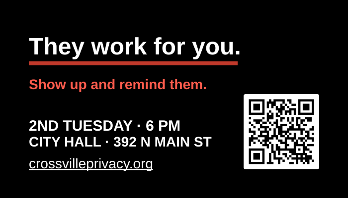
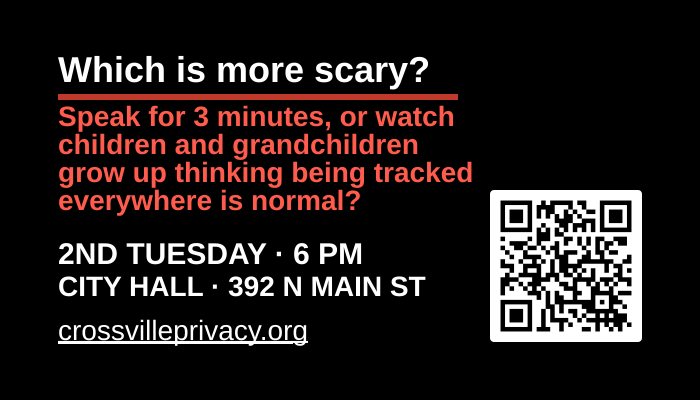

A decorative Flock Safety camera appears in the top-right of the banner, as if watching Crossville landmarks below.
CrossvillePrivacy
Business cards and outreach links you can print and hand out. Email council too, print alone is not enough.
Main Street photo: Brian Stansberry / Wikimedia Commons (CC BY 4.0) Corner Flock camera: MiracleMiles / Wikimedia Commons (CC BY 4.0)
Printables for Crossville, cards & outreach
Hand these out, leave them on community bulletin boards (with permission), or bring them to candidate nights. Independent community materials, not affiliated with the City of Crossville.
Business cards for stalls, boards & coffee counters
Six black cards with red accents, same time, place, and QR to CrossvillePrivacy.org. Upload the PDF (not the preview image) to Staples’ business-card designer. Each file is 3.75×2.25 in, which is their required upload size: a 3.5×2 in card plus 0.125 in bleed on every side. They trim it to a standard 3.5×2 in card. Place the file at 100 percent; do not stretch it to fill their box. If type or the QR sits on their dashed “safe area,” the image was scaled — reset to 100 percent and re-upload. Type is 10 point and larger at that finished size.
Type and the QR sit inside that dashed box. Color that runs to the edge of the file is supposed to run past it to the cut. Staples is not associated with CrossvillePrivacy.org and did not create or endorse these cards.
Follow posted rules and ask permission on private property. Inspired by the outreach cards at deflocksc.org/toolkit/outreach . Artwork and Crossville copy are original.

They work for you.
Which is more scary?Yard signs & other real-world outreach
Physical materials from the wider DeFlock / anti-ALPR network, useful alongside the Crossville cards above. These are third-party shops and toolkits; CrossvillePrivacy.org does not sell them and is not affiliated with the vendors. Place signs only where you have permission.
Also: deflock.org/groups (find other local organizers) · Email leaders after you’ve got materials in hand.